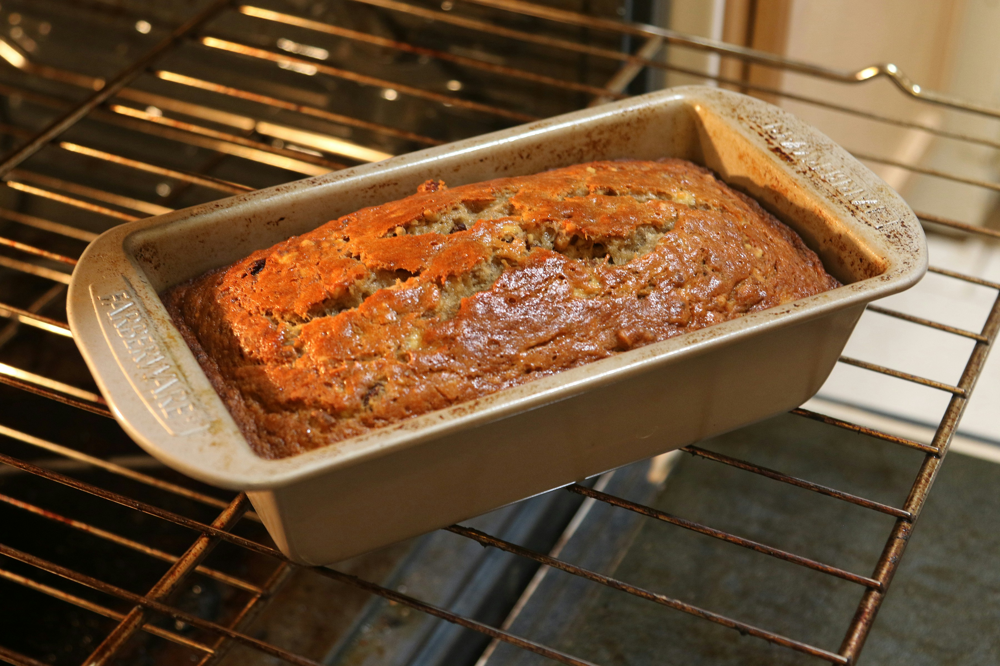

Banana Bread

Banana bread is a beloved, comforting quick bread, distinguished by its inviting aroma and a tender, moist crumb. Each slice offers a perfect balance of natural sweetness from ripe, mashed bananas, often subtly enhanced with warm spices, creating a truly rich and satisfying flavor profile. Its golden-brown crust gives way to a dense yet yielding interior, speckled with the natural fruit.
More than just a simple treat, banana bread serves as a versatile product, ideal for a wholesome breakfast, a comforting afternoon snack, or a delightful accompaniment to coffee or tea. It delivers a homemade feel and a touch of nostalgic warmth, making it a consistently appealing choice for those seeking a subtly sweet, deeply satisfying, and always comforting indulgence.
Ingredients
- 1 cup of sugar
- 1 stick (8 tablespoons) of butter (soften
butter for a couple seconds in microwave)
- 2 eggs
- 1 teaspoon cinnamon
- 1 teaspoon vanilla
- 3 ripe bananas
- 1 tablespoon milk
- 2 cups flour
- 1 teaspoon baking powder
- 1 teaspoon baking soda
- 1 teaspoon salt
Instructions
- 1 teaspoon salt
- Butter a loaf pan (9x5x3).
- Mix butter and sugar in a bowl. Add eggs one at a time and mix.
- In a different bowl, mash the bananas
with a fork. Add milk, cinnamon, and
vanilla to the bananas.
- In yet another bowl, mix the flour, baking
powder, baking soda, and salt.
- Combine the sugar/butter mixture and the
banana mixture together, and add to the
flour mixture.
- Blend everything together (this would be
the time to add chocolate chips if you want).
- Pour the batter into the loaf pan.
- Bake for 1 hour and 10 minutes (you can
check if it is done by sticking a toothpick in
the center. if it comes out clean the bread is
done).
- Let the bread cool for at least 15
minutes before serving.
All recipes